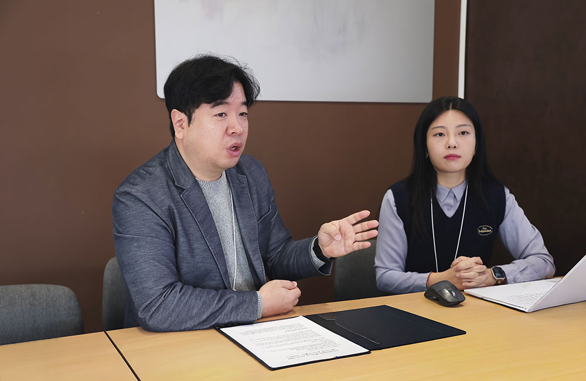
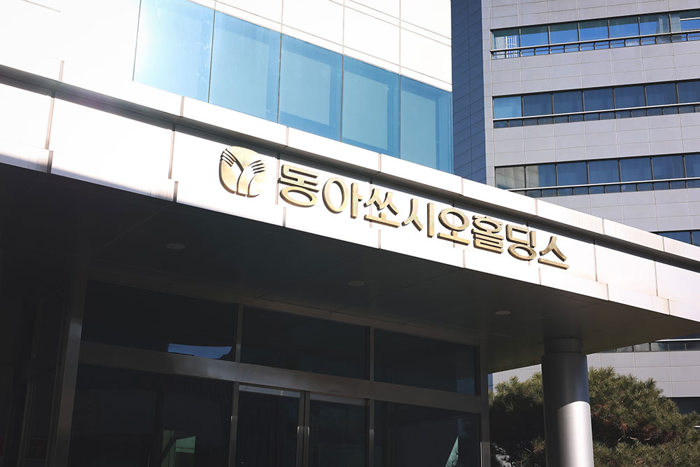
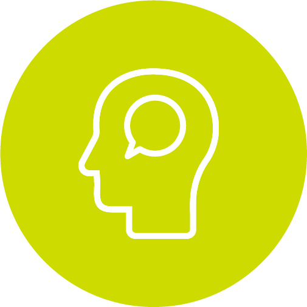
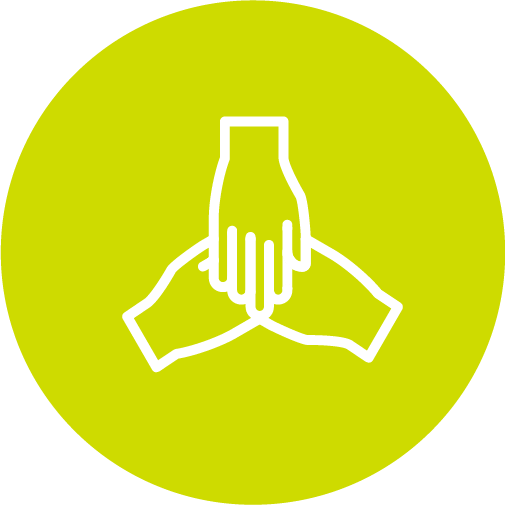
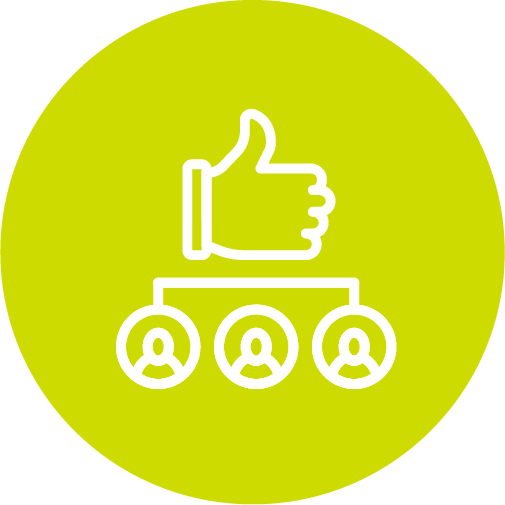
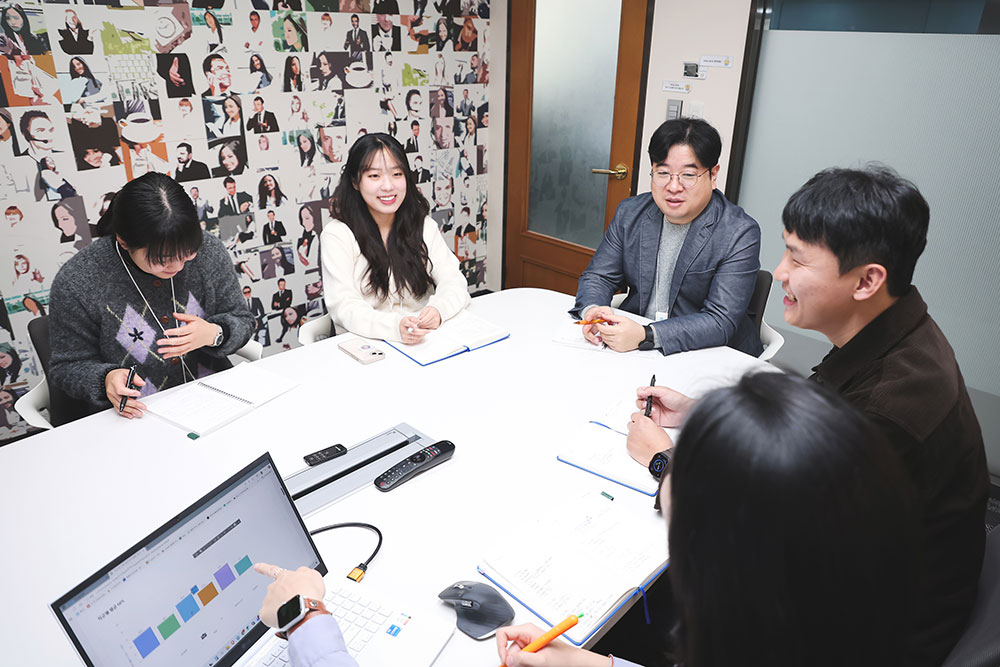

동아쏘시오홀딩스는 13개 계열사로 이루어진 동아쏘시오그룹의 지주회사로, 제약·바이오를 중심으로 식품, 포장재, 헬스케어 등 다양한 산업군을 아우르고 있다. 사업 영역이 넓은 만큼 각 회사의 직무 구조와 인재 육성 체계도 제각기 달랐다. 홀딩스는 이러한 차이를 ‘한 목소리’로 정렬할 공통 기준의 필요성을 절감했고, 그 해답으로 NCS 기반 직무·역량 체계 혁신을 선택했다. 국가 표준이라는 객관적인 틀 위에 각 회사의 특성과 전략을 반영해 다시 설계함으로써, 그룹 전체가 공유할 수 있는 인재 육성의 언어를 갖추게 된 것이다.

Q. NCS 기반 인사·교육 혁신을 추진하게 된 배경이 궁금합니다.
박진호 팀장 동아쏘시오홀딩스는 2021년 신인사제도 개편과 함께 자체 역량 체계를 구축했지만, 당시에는 ‘우리만의 것’에 집중하다 보니 객관적 기준과 외부 레퍼런스가 부족했습니다. 우리가 정의한 역량이 산업 표준과 얼마나 맞닿아 있는지, 어떤 부분이 비어 있는지 판단하기 어려웠던 것이죠. 반면 NCS는 동일 산업군의 직무·역량을 표준화한 체계라 놓친 지점을 점검하고 보완해야 할 영역을 확인하는 데 좋은 기준이 되었습니다. 기존 역량명이 현업 체감과 달리 이해되는 문제도 있어, 직무별로 필요한 역량을 더 정확한 언어로 설명하기 위해 NCS를 적극 활용하게 됐습니다.
BEFORE
- ‘우리만의 것’ 위주로 설계
- 외부 레퍼런스 부족
- 산업 표준과의 정합성 판단 어려움
- 역량명이 현업 체감과 다름
AFTER
- 산업 표준 기반 비교·보완
- 직무별 정확한 정의 가능
- 역량 언어를 명확하게 재정의
- 계열사 간 공통의 언어 확보
Q. 제약·바이오 기업에서 R&D 직군은 전문성이 높은 영역인데요.
어떤 지점에서 NCS가 도움이 되었나요?
박진호 팀장 그룹의 핵심 사업이 제약·바이오 R&D인 만큼, “연구 직군의 역량을 교육 부서가 어떻게 지원할까”는 오래된 숙제였습니다. R&D는 전문성이 높아 “우리가 개입할 수 있을까?”라는 선입견이 있었고, 석·박사급 연구원들은 기존 교육 방식만으로는 지원이 쉽지 않은 직군이었어요. 하지만 NCS가 이 벽을 허물어 주었습니다. 직무 분류와 난이도, 필요 역량이 명확히 정리돼 있어 기업 환경에 맞게 단계화할 수 있었고, 이를 기반으로 연구 직무에도 적용 가능한 체계를 구축할 수 있었죠. 이후 “실제로 도움이 됐다”는 현업 피드백이 이어지며 사업을 지속할 동력도 확보했습니다.
Q. 2023년 R&D 직군을 시작으로 NCS 적용 범위가 크게 확대되었다고 들었습니다.
오은혜 선임 2023년 동아ST R&D 직군을 시작으로 NCS 컨설팅을 도입했습니다. 이후 한국산업인력공단의 확장 제안과 내부 니즈가 맞물리면서 2024년에는 생산·품질, 경영관리 등으로 범위를 넓혀 갔고요. 그 결과 영업·마케팅을 제외한 대부분의 직군을 NCS 기반으로 재정비할 수 있었습니다. 이 과정에서 ‘DACM(Dong-A Competency Management System)’ 방식의 교육 매뉴얼도 탄생했습니다. 단순히 컨설팅으로 끝내지 않고, 계열사 전체가 공통으로 활용할 수 있는 표준 가이드북이 필요하다는 판단에서였죠. 매뉴얼에는 단순 이론뿐 아니라 실제 교육 운영 방식, 퍼실리테이터(Facilitator)의 역할, 현장에서 자주 맞닥뜨리는 문제와 FAQ까지 담아, 어떤 담당자라도 바로 현장에서 적용할 수 있을 만큼 실용적으로 구성했습니다.
Q. DACM과 NCS를 접목해 시스템을 구축할 때 가장 중요하게 본 기준은 무엇인가요?
오은혜 선임 중점적으로 본 건 크게 세 가지였습니다. 첫 번째는 핵심 직무를 정확히 정의하는 일이었습니다. 직무가 모호하면 그 위의 역량과 교육도 흐려지기 때문이죠. 두 번째는 직무 수행에 필요한 역량과 행동지표를 NCS 기반으로 표준화하는 것이었고, 세 번째는 직원이 자신의 수준과 성장 방향을 한눈에 볼 수 있도록 레벨 구조를 설정하는 일이었습니다. 이 세 가지가 갖춰지며 직무–역량–교육–성장 로드맵이 자연스럽게 하나로 연결되는 체계를 만들 수 있었습니다.
Q. 계열사별로 사업 영역과 조직 구조가 다른데, NCS 체계를 어떻게 적용하고 있나요?
박진호 팀장 중요한 건 모든 계열사를 하나의 틀에 억지로 맞추는 방식은 아니라는 점입니다. 저희의 접근은 조금 달라요. 우선 NCS라는 국가 표준을 ‘공통의 언어’로 두고, 그 위에 각 회사의 상황이나 전략, 인력 구조에 맞게 유연하게 커스터마이징하는 방식을 취하고 있어요. 그래서 NCS는 말 그대로 기반이자 출발점이에요. 동일한 기반을 두고 시작하지만, 최종적으로 설계되는 체계는 각 회사의 특성과 필요를 반영해 서로 다른 모습으로 완성되는 구조라고 보시면 됩니다.

Q. NCS 도입 이후 어떤 변화가 있었나요?
오은혜 선임 교육의 깊이와 단계가 생겼다는 점이에요. 2023년만 해도 연구원 공통 과정 하나 만드는 것조차 쉽지 않았는데, 올해는 그 위에 심화 과정과 고급 과정까지 구축되면서 연구 직군을 훨씬 더 체계적으로 지원할 수 있게 됐어요. 한 계열사에서 시작한 교육이 좋은 반응을 얻으니까 다른 계열사에서도 “우리도 해달라”는 요청이 자연스럽게 이어지기도 했어요.
Q. 직원들의 반응은 어땠나요?
박진호 팀장 NCS 기반으로 교육 체계가 정리되면서 리더들뿐 아니라 구성원들도 이를 업무 효율과 개인 성장을 높이는 도구로 인식하게 됐습니다. 특히 올해 R&D 교육은 “실제 업무에 도움이 된다”는 피드백이 많았고, 만족도와 추천 의향을 묻는 NPS 지표도 높게 나왔어요. “시간이 너무 짧다”, “사례를 더 배우고 싶다”는 의견도 있어 내년에는 이런 요구를 반영해 더 깊이 있게 발전시킬 계획입니다.
<NCS 도입 후 변화>



Q. 교육 이후, 성과나 변화는 어떻게 확인하고 있나요?
박진호 팀장 특히 영업 조직에서는 교육 이후 거래처 커뮤니케이션이 개선되면서 매출 추이가 긍정적으로 변한 사례도 있었습니다. 정량 지표만 보더라도 교육 만족도, 현업 적용도, 직무 연관성 등이 전반적으로 상승했어요. 특히 R&D 교육은 원래 기대치가 낮았는데, 실제로는 만족도와 현업 체감도가 예상보다 훨씬 높게 나와 내부에서도 꽤 고무적으로 보고 있습니다.
Q. 앞으로의 확장·고도화 계획이 있다면요?
박진호 팀장 모든 계열사를 동일한 수준으로 맞추는 건 현실적으로 어렵습니다. 각 회사의 인사·교육 체계 성숙도와 사업 특성이 다르기 때문이에요. 그래서 NCS, SOJT(숙련자 전수 제도), 그룹 내 교육 제도를 각 회사상황에 맞게 조합하는 방식으로 확장을 고민하고 있습니다. 장기적으로는 임직원이 스스로 필요한 역량을 확인하고, 그에 맞는 교육을 선택해 학습하며, 자신의 성장 로드맵을 주도적으로 설계할 수 있는 시스템을 만드는 것이 목표입니다.
